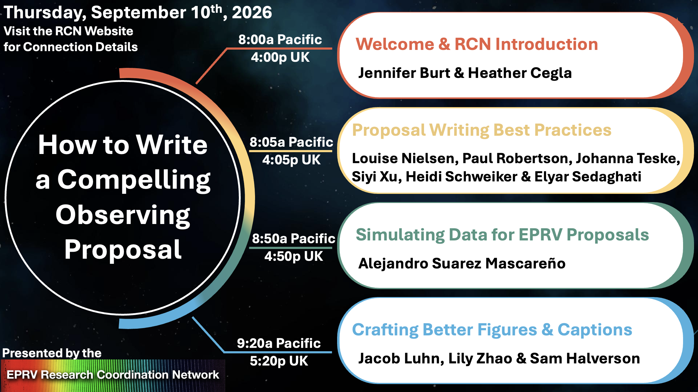

How to Write Compelling Observing Proposals — On-line
September 10th, 2026 · 8:00 - 10:00a Pacific US / 4:00 - 6:00p UK
Workshop Overview
This workshop covered best practices for developing compelling and competitive EPRV observing proposals, with representatives from NOIRLab, ESO, NEID, ESPRESSO, MAROON-X, and more.
The full workshop recording is on YouTube. Slides, a figure checklist, and related proposal-writing resources are collected on the Observing Resources page.
Workshop Agenda

Request for Community Contributions
The Observing Resources page will continue to grow with community input. We especially welcome:
- Notebooks / scripts for generating synthetic RV data with commonly used packages (bonus if you can also record a short walkthrough for the RCN YouTube channel)
- Previously accepted observing proposals you are willing to share as examples across different TACs
- Notes on finding and using exposure time calculators for specific EPRV instruments (and related tips such as archival data access)
If you are willing to contribute, please reach out to the RCN Leads via email (eprv-rcn.leads [at] jpl.nasa.gov) or via the RCN Slack workspace and we will coordinate adding your materials to the site.